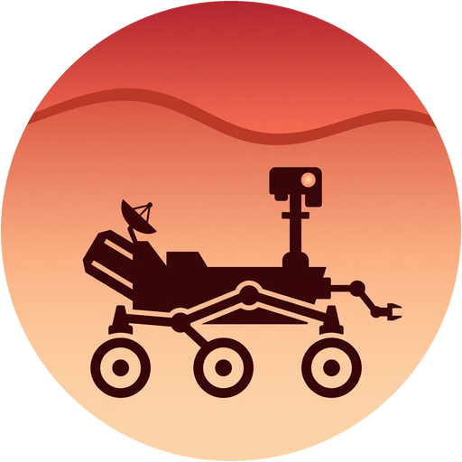

ROVER 2.0 · REBUILT IN RUSTA native Rust browser engine and autonomous AI agent featuring DOM Delta Snapshots (86.9% fewer tokens), Aho-Corasick 2 µs ad blocking, ChaCha20-Poly1305 AEAD secret vaults, and Two-Tier 48 KB background watchers.
Aho-Corasick + literal fast-path adblock matching in 2.00 µs/request, Bincode binary filter snapshots loading in 18.5 ms, and ChaCha20-Poly1305 AEAD vault crypto at 207–397 MB/s.
DOM Delta Snapshots send only changed elements between steps on the same URL. Combined with Compact DSL, Semantic Boilerplate Pruning, String-Table Translation Deduplication, and Adaptive Vision.
Tier-1 Native Rust HTTP watchers monitor pages for stock, price drops, or text changes in ~48 KB of RAM without spinning up a 150 MB Chromium renderer tab, waking the AI only on a rising-edge match.